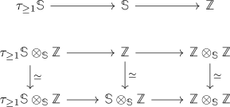

Z tensor Z over the sphere nontrivial
Proposition
The spectrum $\mathbb{Z} \otimes_{\mathbb{S}} \mathbb{Z}$ has higher homotopy groups.
Proof
Consider the fiber sequences

Then the stable hurewicz theorem $\pi_1(\tau_{\geq 1} \mathbb{S}) \cong \mathbb{Z}/2 \mathbb{Z}$ and the long exact sequence shows $\pi_1(\tau_{\geq 1} \mathbb{S}) \cong \pi_2(\mathbb{Z} \otimes_{\mathbb{S}} \mathbb{Z})$.